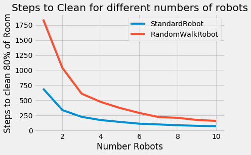
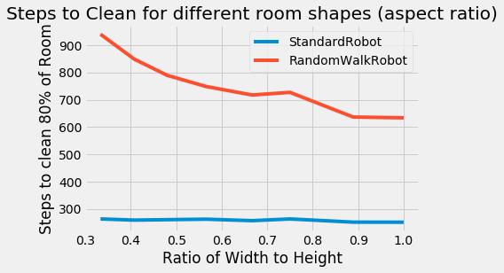

import sys
print(sys.executable)
import ps2
import math
from random import randint
from ps2_verify_movement37 import testRobotMovement
import ps2_visualize
import pylab
import inspect/home/jcmint/anaconda3/envs/learningenv/bin/pythonI import the classes from ps2.py, including Position, RectangularRoom, Robot (and its subclasses StandardRobot and RandomWalkRobot). Nothing too complex here, just a hacky way of dealing with storing robot positions in a room represented as a NumPy Array.
loc = ps2.Position(2, 2)
bad_loc = ps2.Position(10, 10)
room = ps2.RectangularRoom(6, 8)
print(room.isPositionInRoom(loc))
print(room.isPositionInRoom(bad_loc))True
FalseThe robot is initialized in the 6 x 8 room with a set movement speed and at a random location. Upon initialization the tile it is on is marked as clean (so it starts out with one clean tile before moving). Then, moving again, it updates the position and the number of cleaned tiles.
robot = ps2.StandardRobot(room, 1)
print(robot.getRobotPosition())
print(robot.room.getNumCleanedTiles())
robot.updatePositionAndClean()
print(robot.getRobotPosition())
print(robot.room.getNumCleanedTiles())(1.00, 4.00)
1
(0.28, 4.69)
2The runSimulation function has args of the number of robots, speed, width, height, clean threshold and number of trials. The robots are initialized and trials are run until a set percent of the room has been covered by the robot, counting the number of steps taken, and returning the average of these steps over a number of trials. Here, we see that a randomly walking robot will take much longer than a straight "bouncing" robot to clean a room.
print(ps2.runSimulation(1, 1.0, 10, 10, 0.9, 30, ps2.StandardRobot))
print(ps2.runSimulation(1, 1.0, 10, 10, 0.9, 30, ps2.RandomWalkRobot))240.13333333333333
614.1Finally, we can run these trials for different combinations of the number of robots, or the aspect ratio (ratio of height to width), and see how many time steps it takes to clean the room. The second command hung up so I wasn't able to show all the data.
from matplotlib import style
style.use('fivethirtyeight')
ps2.showPlot1("Steps to Clean for different numbers of robots", "Number Robots", "Steps to clean 80% of Room")
ps2.showPlot2("Steps to Clean for different room shapes (aspect ratio)", "Ratio of Width to Height", "Steps to clean 80% of Room")Plotting 1 robots...
Plotting 2 robots...
Plotting 3 robots...
Plotting 4 robots...
Plotting 5 robots...
Plotting 6 robots...
Plotting 7 robots...
Plotting 8 robots...
Plotting 9 robots...
Plotting 10 robots...
Plotting cleaning time for a room of width: 10 by height: 30
Plotting cleaning time for a room of width: 11 by height: 27
Plotting cleaning time for a room of width: 12 by height: 25
Plotting cleaning time for a room of width: 13 by height: 23
Plotting cleaning time for a room of width: 14 by height: 21
Plotting cleaning time for a room of width: 15 by height: 20
Plotting cleaning time for a room of width: 16 by height: 18
Plotting cleaning time for a room of width: 17 by height: 17
Print out RectangularRoom, Robot, StandardRobot, RandomWalkRobot, RunSimulation classes
# print out the RectangularRoom Class
print(inspect.getsource(ps2.RectangularRoom))class RectangularRoom(object):
"""
A RectangularRoom represents a rectangular region containing clean or dirty
tiles.
A room has a width and a height and contains (width * height) tiles. At any
particular time, each of these tiles is either clean or dirty.
"""
def __init__(self, width, height):
# Create array to represent room, with all False values
self.width = width
self.height = height
self.grid = np.zeros((height, width), dtype=bool)
"""
Initializes a rectangular room with the specified width and height.
Initially, no tiles in the room have been cleaned.
width: an integer > 0
height: an integer > 0
"""
def cleanTileAtPosition(self, pos):
(c, r) = math.floor(pos.getX()), math.floor(pos.getY())
# adjust position which begins at 1, 1, to grid which begins at 0, 0
# This is pretty hacky, but for some reason a position that passed the isPositionInRoom is out of bounds..
if (0 <= pos.getY() < self.height) & (0 <= pos.getX() < self.width):
self.grid[r - 1, c - 1] = True
"""
Mark the tile under the position POS as cleaned.
Assumes that POS represents a valid position inside this room.
pos: a Position
"""
# raise NotImplementedError
def isTileCleaned(self, m, n):
"""
Return True if the tile (m, n) has been cleaned.
Assumes that (m, n) represents a valid tile inside the room.
m and n: integers
returns: True if (m, n) is cleaned, False otherwise
"""
return self.grid[n - 1, m - 1]
# raise NotImplementedError
def getNumTiles(self):
return self.grid.shape[0] * self.grid.shape[1]
# Return the total number of tiles in the room, returns: an integer
# raise NotImplementedError
def getNumCleanedTiles(self):
return sum(sum(self.grid))
# Return the total number of clean tiles in the room.
# raise NotImplementedError
def getRandomPosition(self):
# Return a random position inside the room, returns: a Position object.
# second element of shape is number of columns, representing x distance. adjust position
# by subtracting one since that is done when adjusting math position to matrix position
rand_x, rand_y = randint(1, self.grid.shape[1]), randint(1, self.grid.shape[1])
return Position(rand_x - 1, rand_y - 1)
# raise NotImplementedError
def isPositionInRoom(self, pos):
"""
Return True if pos is inside the room.
pos: a Position object.
returns: True if pos is in the room, False otherwise.
"""
if (0 <= pos.getY() < self.height) & (0 <= pos.getX() < self.width):
return True
else:
return False# print out the Robot Class
print(inspect.getsource(ps2.Robot))class Robot(object):
"""
Represents a robot cleaning a particular room.
At all times the robot has a particular position and direction in the room.
The robot also has a fixed speed.
Subclasses of Robot should provide movement strategies by implementing
updatePositionAndClean(), which simulates a single time-step.
"""
def __init__(self, room, speed):
"""
Initializes a Robot with the given speed in the specified room. The
robot initially has a random direction and a random position in the
room. The robot cleans the tile it is on.
room: a RectangularRoom object.
speed: a float (speed > 0)
"""
# A position object is stored as self attribute
self.room = room
self.pos = self.room.getRandomPosition()
self.room.cleanTileAtPosition(self.pos)
self.angle = randint(0, 359)
self.speed = speed
def getRobotPosition(self):
"""
Return the position of the robot.
returns: a Position object giving the robot's position.
"""
return self.pos
def getRobotDirection(self):
"""
Return the direction of the robot.
returns: an integer d giving the direction of the robot as an angle in
degrees, 0 <= d < 360.
"""
return self.angle
def setRobotPosition(self, position):
"""
Set the position of the robot to POSITION.
position: a Position object.
"""
self.pos = position
def setRobotDirection(self, direction):
"""
Set the direction of the robot to DIRECTION.
direction: integer representing an angle in degrees
"""
self.angle = direction
def updatePositionAndClean(self):
"""
Simulate the passage of a single time-step.
Move the robot to a new position and mark the tile it is on as having
been cleaned.
"""
raise NotImplementedError # don't change this!# print out the StandardRobot Class
print(inspect.getsource(ps2.StandardRobot))class StandardRobot(Robot):
"""
A StandardRobot is a Robot with the standard movement strategy.
At each time-step, a StandardRobot attempts to move in its current
direction; when it would hit a wall, it *instead* chooses a new direction
randomly.
"""
def updatePositionAndClean(self):
"""
Simulate the passage of a single time-step.
Move the robot to a new position and mark the tile it is on as having
been cleaned.
"""
has_moved = False
while not has_moved:
new = self.pos.getNewPosition(self.angle, self.speed)
if self.room.isPositionInRoom(new):
self.setRobotPosition(new)
self.room.cleanTileAtPosition(self.pos)
has_moved = True
else:
self.angle = randint(0, 359)# print out the RandomWalkRobot Class
print(inspect.getsource(ps2.RandomWalkRobot))class RandomWalkRobot(Robot):
"""
A RandomWalkRobot is a robot with the "random walk" movement strategy: it
chooses a new direction at random at the end of each time-step.
"""
def updatePositionAndClean(self):
"""
Simulate the passage of a single time-step.
Move the robot to a new position and mark the tile it is on as having
been cleaned.
"""
has_moved = False
while not has_moved:
self.angle = randint(0, 359)
new = self.pos.getNewPosition(self.angle, self.speed)
if self.room.isPositionInRoom(new):
self.setRobotPosition(new)
self.room.cleanTileAtPosition(self.pos)
has_moved = True# print out the runSimulation Class
print(inspect.getsource(ps2.runSimulation))def runSimulation(num_robots, speed, width, height, min_coverage, num_trials,
robot_type, toprint = False):
"""
Runs NUM_TRIALS trials of the simulation and returns the mean number of
time-steps needed to clean the fraction MIN_COVERAGE of the room.
The simulation is run with NUM_ROBOTS robots of type ROBOT_TYPE, each with
speed SPEED, in a room of dimensions WIDTH x HEIGHT.
num_robots: an int (num_robots > 0)
speed: a float (speed > 0)
width: an int (width > 0)
height: an int (height > 0)
min_coverage: a float (0 <= min_coverage <= 1.0)
num_trials: an int (num_trials > 0)
robot_type: class of robot to be instantiated (e.g. StandardRobot or
RandomWalkRobot)
"""
results = [None] * num_trials
# Run number of trials and keep track with results list
for trial in range(0, num_trials):
my_room = RectangularRoom(width, height)
my_bots = {}
# Initialize robots
for i in range(1, num_robots + 1):
my_bots[i] = robot_type(my_room, speed)
steps = 0
while my_room.getNumCleanedTiles()/my_room.getNumTiles() < min_coverage:
for bot in my_bots.values():
bot.room = my_room
bot.updatePositionAndClean()
my_room = bot.room
steps += 1
if ((toprint) & (steps%100 == 0)):
print("Took Step ", steps)
results[trial] = steps
if toprint:
print("Finished Trial: ", trial)
return sum(results)/len(results)